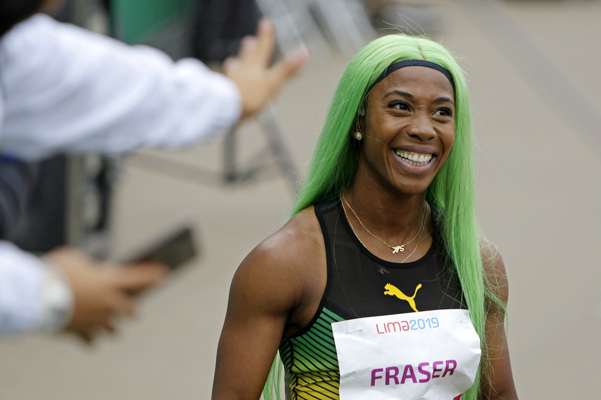
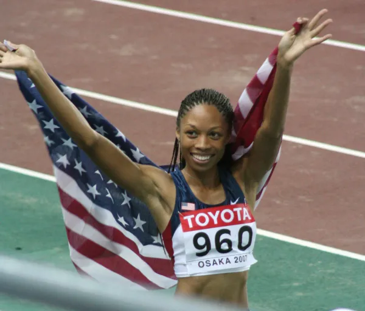

"Usain Bolt at Brunel University" by Brunel University London is licensed under CC BY 2.0 
 .
.
One of my ultimate favorite olympian sprinters is Usain Bolt, born August 21st In Sherwood Content, Jamaica Bolt is one of the most popular spinters of all time. Usain Bolt is most commonly known for sprinting the 100m where he runs a 9.58 flat but Bolt also competes in other events including the 40 yd, the 150, the 200, 300, 400, 800, as well as the 4x1 and 4x4 relays. Growing up being born in 2008 Usain Bolt was a houshold name in my environment as Jamaicans are very proud to have such a talented athlete competeing and representing their country. My father loved sports very much so from a yound age I have been aspiring to be even somewhat like Usain Bolt. While many think Bolt is past his time, especially since is is retired from Track and Field as of 2017 I personally will never think that he is past his time.
"Shelly-Ann Fraser-Pryce" by Legado Lima 2019 is marked with Public Domain Mark 1.0  .
.
While many focus on the men who compete in Track and Field there are many women who spend every day and night pushing themselves to be the best they can in their sport, Shelly-Ann Fraser-Pryce is one of them. For men it comes a little easier to be noticed when they perform well but women must push themselves a little harder. Shelly-Ann is an amazingly inspirational athlete born on December 27th and born in Kingston Jamaica, Shelly-Ann is named the third fastest woman of all time. Shelly-Ann began sprinting in primary school when she was only 10 and races 100 metres in 11.57 seconds as a 16 year old girl. Shelly-Ann is known for her incredible sprinting, she competes in the 60m, 200m, and of course the 100m where her last entry is a 10.60 flat. Shelly-Ann Fraser-Pryce is definately one of my top 3 athletes not only because she's Jamaican but because of her incredibly inspirational dedication to her sport. Shelly-Ann was not born rich or weathly but she now has an estimated net worth of 4 million all because of how much determination she has to Track and Field. Watching Shelly-Ann sprint is almost surreal as i sometimes cant believe how someone can get out of the blocks so perfectly and run so fast. While there will never be another Shelly-Ann Fraser-Pryce I hope to one day come close to her feats and I hope to maybe one day know how to melt a lace and keep it on so well.
Even though the other two athletes I have listed are from Jamaica, I do get inspiration from athletes that compete with other teams besides Jamaica. For example, Allyson Michelle Felix runs with USA's team and is the first female track and field athelte to win seven olympic gold medals. Allyson was born in Santa Clarita California on November 18, 1985 Allyson went to the University of Southern California way before she retired in the 2022 season after she had "one last run" Allyson competed in the 100m, the 150m, 200m, 400m, along with the 4x4 and 4x1 relay. Allyson started running track in 9th grade and was named the national girls "high school athlete of the year" by track and field news, and for good reason. Allyson ran an 10.89 in the 100m in 2012 and a 16.36 in the 150 in 2013, while these entries arent the most recent these times should not be ignored as they are incredible and they show how much her dedication and work ethic pays off. Allyson gives most of the credit to her faith as she says that god is the reason for her incredible talent and that every time she is competeing she feels his presence with her. Felix is the most decorated american track and field athlete, female or male in world athletics championships history with 20 career medals, 13 from team relays and 7 from individual events. While Allyson has already hung up her spikes and put running behind her, I will never stop being amazed at how incredible she is and these medals will never go un recognized.